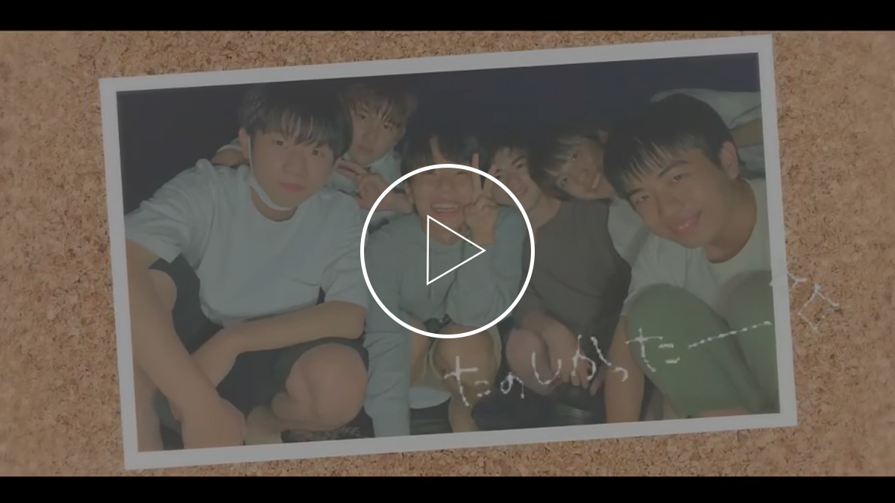
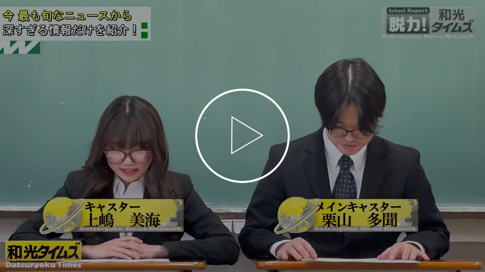
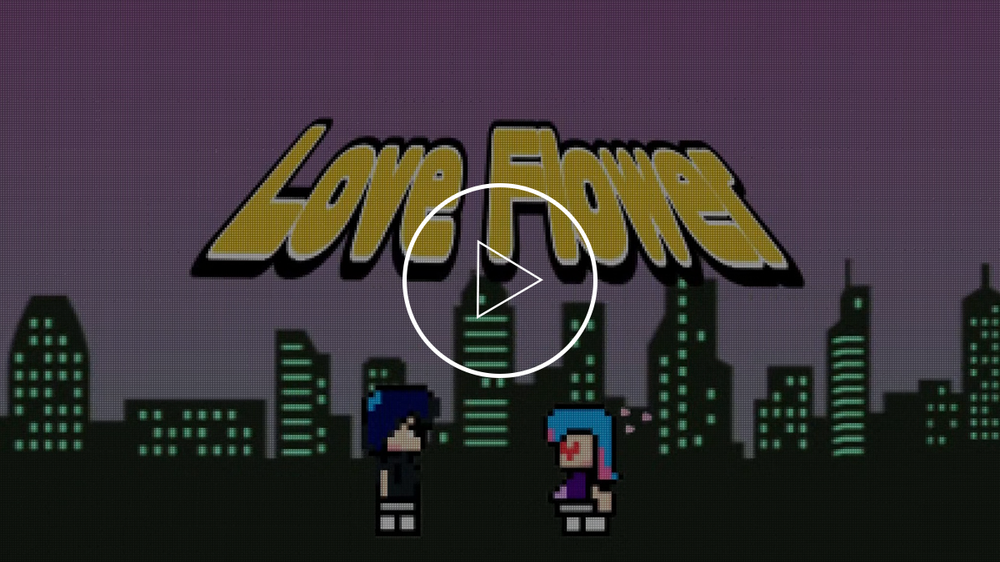
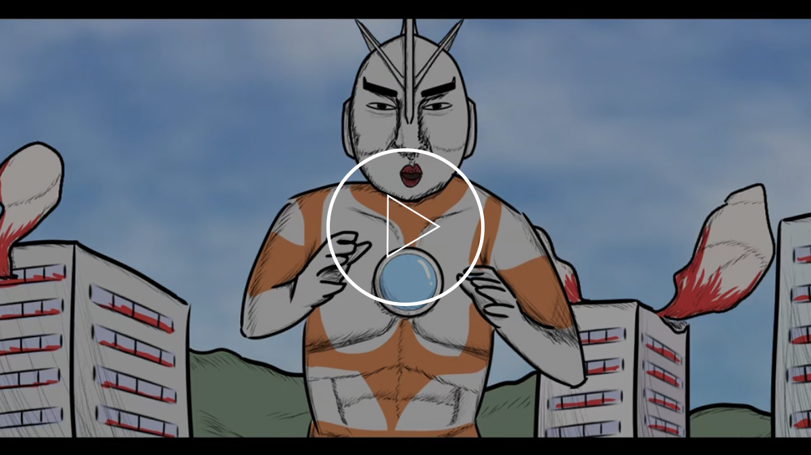

めんそーれ
高校二年生の頃、研究旅行で沖縄に行った際の動画です。
少しでも自分から表現したいと思い、使用楽曲は自身歌唱した曲にしました。タイトルは沖縄っぽいという理由で友達が決めました。

脱力！和光タイムズ
高校の卒業式で、全校生徒＆保護者の前で流した動画です。
編集・出演・撮影を担当しました。

Love Flower
イラストを動かしたアニメーション動画を作りました。

帰っていったミラクルマン
アニメ作家谷口崇さんからインスピレーションを受けて、ギャグアニメを作りました。